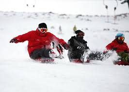
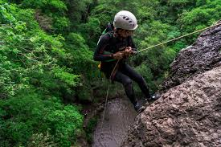

People who visited different places of attractions in Lesotho were interviewed about their experiences and these are their responses
AFRISKI
Visiti Afriski mountain resort felt like stepping into a different world.
I exprienced snow for the first time andwatched people kiing down the slopes.
The cold air and white mountainsmade everything look magical.
Even though it was freezing, the excitement made it worth it. It was a fun and unfoegattablewinter experince.

TRADITIONAL GRINDING STONE IN LESOTHO
As the sun rose over the mountains of Lesotho, i watched a woman using a traditional geinding stone to prepare food.
This process known as ho sila is an important part of Basotho culture.
This experience showed me the beauty of traditional life and the strong connection between culture, food, and everyday living in Lesotho.

MOUNTAIN CLIMBING
Trying rock climbing in Lesotho mountains was bth scary and exciting.
At first, i was nervous, but i slowly gained confidenceas i climbed higher.
The view from above made all the effort worth it.
it tested my strength and carriage at the same time.
It turned out to be one of most thrilling experiences.

LIPHOFUNG
Visiting Liphofung cave felt like going back in time.
I saw the cave under the cliff and learned about its history.The small houses nearby showed how people used to live long ago.
the place was quiet and full of cultural meaning. It was a peaceful and educational experience.